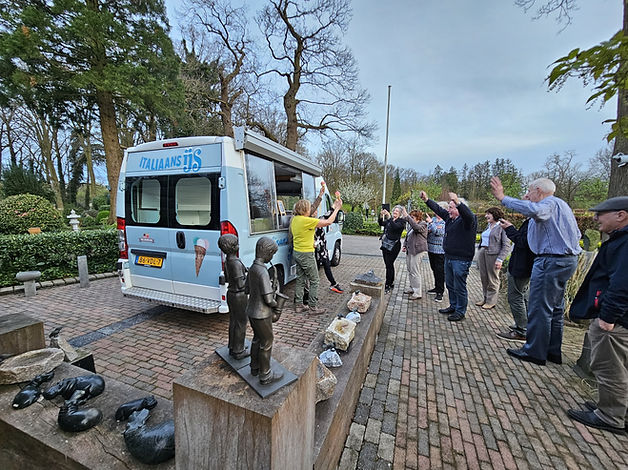

IJskar
Ambachtelijk bereid. De overheerlijke smaken van ons ambachtelijke schepijs uit onze Vespa tuktuk laten op ieder event een feestelijke indruk achter.
- Unieke ervaring
- Keuze uit ons gehele assortiment
- Vers schepijs
IJskar Nostalgie1 uur€ 125
IJskar Piaggio1 uur€ 125
Onze ijskar is te huren vanaf € 150, met een breed smakenassortiment voor ieder wat wils.